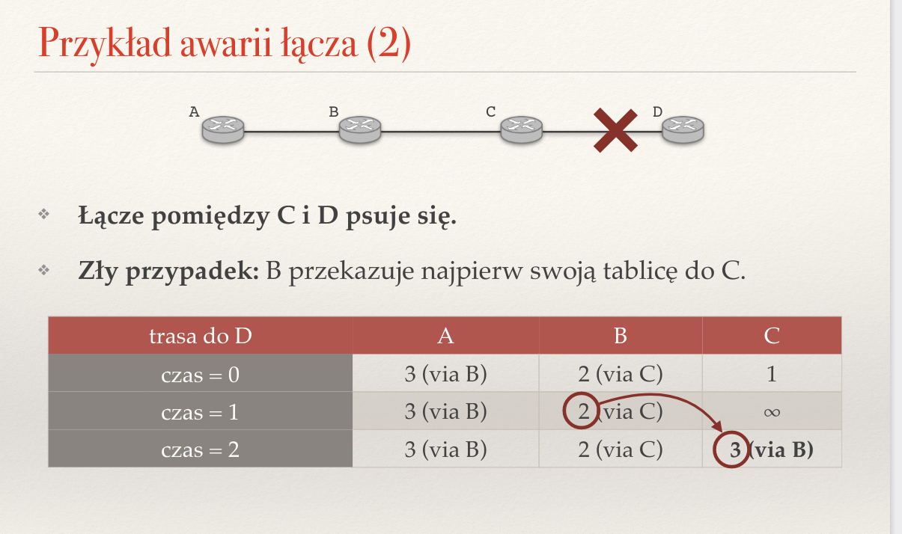
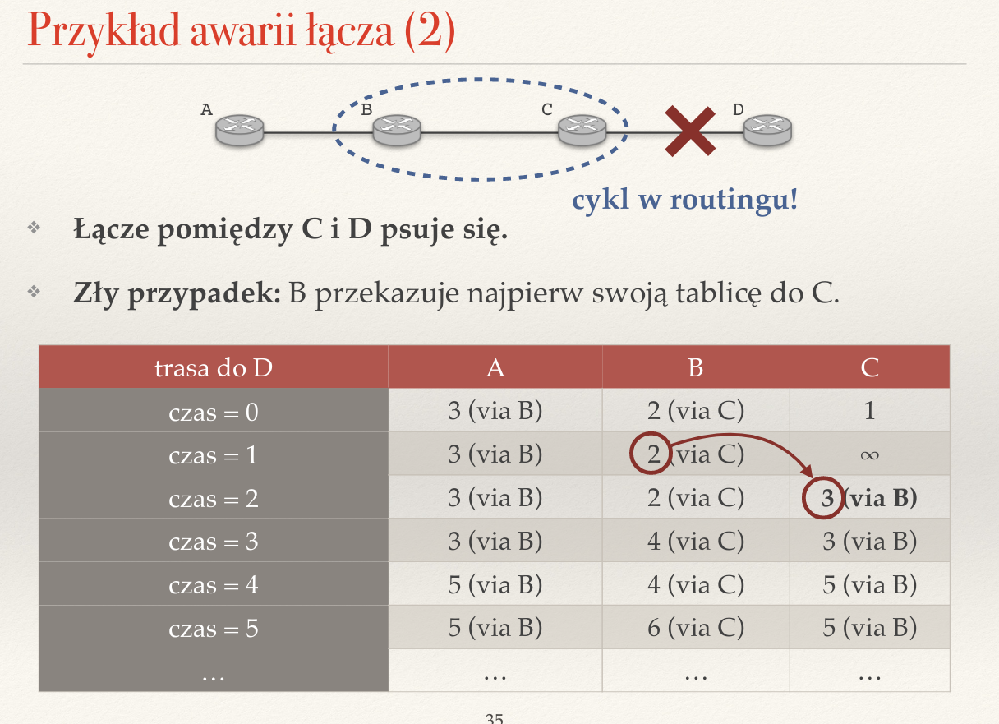
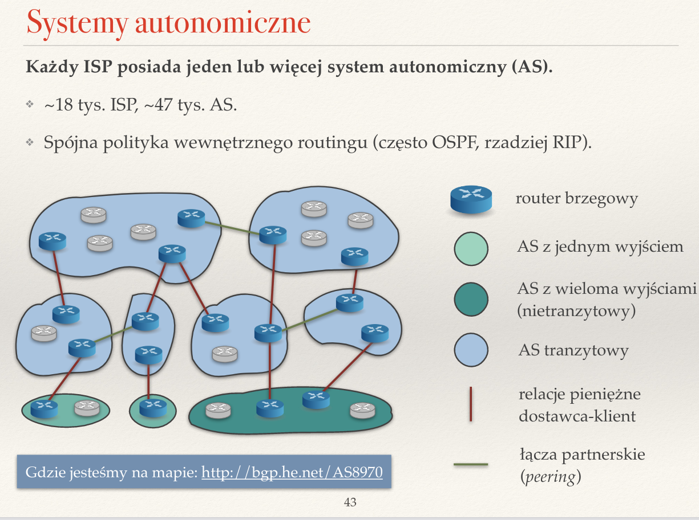
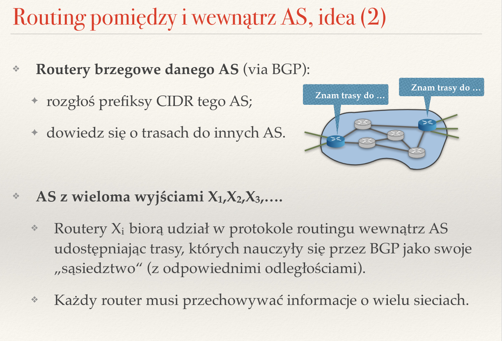

Created Tuesday 21 June 2022
Zagadnienia
❖ Co to jest cykl w routingu? Co go powoduje?
Cykl w routingu to sytuacja, w którym ten sam pakiet dotrze do routera, przez który został wysłany. Jest to niekorzystny scenariusz, ponieważ pakiety zamiast dotrzeć do celu, zaczynają krążyć w kółḱo. Może on wystapić np. w przypadku awarii łącza, lub gdy tablica routingu zostanie źle skonfigurowana.

❖ Czym różni się tablica routingu od tablicy przekazywania?
Tablica przekazywania (forwarding table) to silnie zoptymalizowana struktura danych, zawierająca informacje o następnym routerze na trasie. Często jej implementacja jest wspierana sprzętowo. Służy do podejmowania decyzji o przesłaniu pakietu na podstawie najdłuższego pasującego prefiksu adresu. Jest to znacznie większa struktura, przechowująca liczne informacje o topologii sieci.
Tablica routingu (routing table) to tablica, zawierająca informacje o trasach, jakie pokonują pakiety, w tym trasach zapasowych. Jest to w pewnym sensie podzbiór tablicy przekazywania.
❖ Dlaczego w algorytmach routingu dynamicznego obliczamy najkrótsze ścieżki?
Ponieważ chcemy, by wyznaczone trasy były minimalne pod względem kosztu. Koszt danego połączenia definiuje metryka, bezpośrednio określająca to, co nazywamy najkrótszą ścieżką.
❖ Co to jest metryka? Jakie metryki mają sens?
Metryka to metoda opisu odległości, lub bardziej ogólnie kosztu danej trasy. Metryką może być fizyczna odległość w metrach, czas propagacji sygnału, koszt wysłania pakietu między urządzeniami, itd.
❖ Czym różnią się algorytmy wektora odległości od algorytmów stanów łączy?
Wektor odległości — jest to pewna implementacja algorytmu Bellmana-Forda. Routery wysyłają do sąsiadów swoje tablice przekazywania co określony interwał czasowy, np. 30 sekund. Każdy z nich na podstawie otrzymanych tablic ustala najkrótszą trasę do punktu docelowego. Cechuje się trzema własnościami:
- każdy router rozsyła to, co wie o całej sieci
- informacje są rozsyłane jedynie do sąsiadów,
- informacje są rozsyłane w regularnych odstępach czasowych.
Stan łącza — każdy router rozsyła wiadomość jedynie o swoim bezpośrednim sąsiedztwie, ale do wszystkich pozostałych routerów. Taki mechanizm rozsyłania informacji nazywamy zalewaniem (flooding) — każdy router otrzymuje pakiet i rozsyła jego kopie do sąsiadów. Wiadomości nie są wysyłane regularnie, a jedynie wtedy, gdy zajdzie jakaś zmiana w stanie danego routera. Ostatecznie wiadomość rozlewa się po całej sieci. Na podstawie otrzymanych informacji routery obliczają lokalnie optymalne trasy do wszystkich innych routerów (np. za pomocą algorytmu Dijkstry). Finalnym stanem algorytmu jest znajomość całej sieci przez każdy router. Podsumowując:
- każdy router rozsyła do wszystkich innych routerów (poza sąsiadami) wiadomości o odległości do swoich sąsiadów
- wiadomości są wysyłane tylko wtedy, gdy nastąpi zmiana w sieci
- każdy router rozsyła jedynie wiadomości o swoich sąsiadach
- finalnie każdy router zna topologię całej sieci
❖ Jak router może stwierdzić, że sąsiadujący z nim router jest nieosiągalny?
Wystarczy ustalić graniczną wartość odległości, powyżej której router jest uważany za nieosiągalny (pomaga rozwiązać problem zliczania do nieskończoności).
❖ Co to znaczy, że stan tablic routingu jest stabilny?
Oznacza, że wysłanie kolejnych wektorów odległości nie powoduje aktualizacji tablic przekazywania.
❖ Jak zalewać sieć informacją? Co to są komunikaty LSA?
Komunikaty LSA (ILink State Advertisement) — określają stan pojedynczego łącza. Zawierają źródło komunikatu oraz numer sekwencyjny (jako który z kolei pakiet zostały wysłane). Są przesyłane na początku, przy każdej zmianie oraz co ustalony czas, np. 30 minut. Wykorzystywany prez protokół OSPF (Open Shortest Path First). Rozsyłane przy kontrolowanym zalewaniu.
Kontrolowane/Niekontrolowane zalewanie — metoda, z jaką rozsyłamy informacje o sieci innym routerom. W przypadku niekontrolowanego zalewania informacje są wysyłane do każdego, a routery nie sprawdzają w żaden sposób, czy już kiedyś przekazaly daną informację. Może to prowadzić do wielokrotnego wysyłania tych samych wiadomości i zbędnego obciążania sieci. By temu zaradzić do wiadomości dodaje się pewne metadane, które pozwalają routerom odróżniać od siebie wiadomości, np. dołączając do nich numery sekwencyjne i adresy routera źródłowego. Takie rozwiązanie to kontrolowane zalewanie.
❖ Co wchodzi w skład wektora odległości?
Wektor odległości zawiera jedynie informacje do znanych mu routerów oraz sieci.
❖ W jaki sposób podczas działania algorytmu routingu dynamicznego może powstać cykl w routingu?
Rozważmy przypadek awarii łącza między routerami C i D. Wszystko będzie w porządku, jeśli routery przekażą sobie swoje tablice w odpowiedniej kolejności. Nie mamy jednak gwarancji, że się tak stanie, np.
C dowiaduje się o tym natychmiast (czas = 1), ustala odległość do D na nieskończoność i rozsyła wiadomość do sąsiadów.
B dowiaduje się od C, że nie umie się już dostać do D i ustawia odległość na nieskończoność.
A dowiaduje się od B i ustawia odległość do D na nieskończoność.
Wszystko śmiga!
A co, jeśli B przekaże swoją tablicę do C, zanim C przekaże informację o awarii do B?
C dowiaduje się o awarii i ustawia odległość do D na nieskończoność.
B wysyła swoją tablicę do C.
C widzi, że samo nie umie się dostać do D, ale B powiedziało mu, że potrafi się dostać do D. Dlatego C aktualizuje swój wpis, przekierowując ruch do D przez B.
Powstał cykl w routingu. B i C będą wzajemnie wymuszać na sobie aktualizację, przez co ich odległości do D będą stale rosły (zliczanie do nieskończoności).
Problem wynikł stąd, że B wysłało wiadomość o trasie do D do C, ale C leży dokładnie na tej trasie.

❖ Co to jest problem zliczania do nieskończoności? Kiedy występuje?
Jak w wyżej opisanym przypadku, zliczanie do nieskończoności pojawia się wtedy, gdy router A wysyła swoją trasę do routera B, ale router B leży na tej wysłanej trasie. Prowadzi to do zapętlenia aktualizacji, przez co odleglości w tych dwóch routerach stale rosną do nieskończoności.
❖ Na czym polega technika zatruwania ścieżki zwrotnej (poison reverse)?
Technika zatruwania ścieżki zwrotnej (poison reverse) w skrócie oznacza, że routery leżące bliżej na trasie do routera X wiedzą więcej o tej trasie, niż routery umieszczone dalej. Np. w tej sytuacji router C ma lepszą wiedzę o stanie trasy do D niż router B:
/pasted_image002.png)
W praktyce mechanizm działa w taki sposób, że jeśli router X jest wpisany jako następny router na ścieżce do Y, to mówimy routerowi X, że mamy do Y ścieżkę nieskończoną. Korzystając z powyzszego rysunku. Jeśli B zechce powiedzieć C, że zna trasę do D długości n, wtedy zauważy, że C leży na tej trasie i finalnie powie, że nie umie dostać się do D.
Technika ta pozwala uniknąć problemu zliczania do nieskończoności.
❖ Po co w algorytmach wektora odległości definiuje się największą odległość w sieci (16 w protokole RIPv1)?
By uniknąć zliczania do nieskończoności. Jeśli trasa do routera będzie zbyt długa, uznajemy go za nieosiągalny.
❖ Po co stosuje się przyspieszone uaktualnienia?
Przyspieszone uaktualnienia stosuje się w przypadku wykrycia awarii, jako pewna metoda radzenia sobie z problemem zliczania do nieskończoności.
❖ Co to jest system autonomiczny (AS)? Jakie znasz typy AS?
AS (Autonomous System) to zbiór sieci lub grup sieci, które posiadają wspólną politykę routingu (często OSPF, raczej RIP). Systemy autonomiczne należą do dostawców Internetu (ISP — Internet Service Provider). Każdy ISP ma pod sobą co najmniej jeden system autonomiczny.

Systemy autonomiczne dzielą się na cztery typy względem ich polityki łączności i działania:
- multihomed — AS posiada połączenia do więcej niż jednego innego AS. Pozwala mu to na połączenie z Internetem nawet w razie kompletnej utraty łączoności z jednym z tych systemów. Różni się od transit tym, że nie przepuszcza przez siebie ruchu między dwoma innymi systemami — nie jest pośrednikiem.
- stub — AS, który łączy się tylko z jednym inny AS, ale pozwala na łącza partnerskie (peering) z wieloma innymi AS.
- transit — działa jak multihomed, ale pozwala na ruch tranzytowy.
- IX/IXP (Internet Exchange Point) — fizyczna struktura, za pomocą której ISP lub CDN (Content Delivery Network) wymieniają ruch internetowy między swoimi systemami autonomicznymi.
/pasted_image004.png)
❖ Czym różnią się połączenia dostawca-klient pomiędzy systemami autonomicznymi od łącz partnerskich (peering)?
Połączenia dostawca-klient (client-server):
- potrzebny jest centralny serwer, który obsługuje zapytania, by zapewnić stałość usługi
- przy dużym obciążeniu spada wydajność łącza, by temu zapobiec należy dodać wydajniejszy serwer
- skupia się na dostawie usługi i wymianie danych
- drogie w implementacji
- większe bezpieczeństwo, bo dostęp do zasobów jest kontrolowany przez serwer, a nie klientów
- może być używana zarówno dla małych, jak i dużych sieci (ograniczeniem jest wydajność serwera)
Połączenia partnerskie (peer-to-peer)
- skupia się na komunikacji i lączności
- szyscy uczestnicy połączenia (peers) działáją zarówno jako klient jak i serwer (odbiorca i dostawca)
- jest tańszy w implementacji, nie trzeba centralnej maszyny
- bezpieczeństwo zapewniane przez użytkowników — możliwa podatność na ataki
- stabilność łącza maleje, gdy śnie liczba uczestników
- zwykle wykorzystywana dla małych sieci
❖ Dlaczego w routingu pomiędzy systemami autonomicznymi nie stosuje się najkrótszych ścieżek?
Ze względu na nieco inne priorytety dostawcy. Dostawca Internetu nie skupia się na szybkości, ale na minimalizacji kosztów (chce płacić jak najmniej), prywatności (nie chce udostępniać wewnętrznych informacji na temat systemu) oraz autonomii (nie chce, by ktoś wysyłał dane przez jego AS, ale on sam nie miał z tego korzyści).
❖ Które trasy w BGP warto rozgłaszać i komu? A które wybierać?
BGP (Border Gateway Protocol) — protokół, który pozwala na routing danych w internecie.
Algorytmy routingu bazują na algorytmach wektora odległości (algorytmy stanu łączy nie gwarantują prywatności i wymagają uzgodnień między dostawcami Internetu).
Rozgłaszane są całe poznane trasy, co pozwala na łatwe unikanie cykli.
Dostawca Internetu sam decyduje czy i komu rozgłosi trasę, a także które trasy wykorzysta do tworzenia tablic przekazywania.
Które trasy warto rozgłaszać:
- zawartość naszego AS (prefiksy CIDR), bo inaczej nikt nie trafi do naszej sieci
- trasy do naszych klientów, bo przecież to oni płącą za przekazywane dane, a w szczególności warto je rozgłaszać naszym partnerom (peers), bo za te połączenia nic nie płacimy
- trasy do naszych dostawców, ale wysyłamy je tylko naszym klientom — nie chcemy, żeby ktoś spoza naszego AS potrafił przesyłać przez nasz system dane do naszego dostawcy (my płacimy, a oni nie)
- trasy do naszych partnerów, ale ponownie — tylko klientom
Jak dobierać trasy:
- zwykle najkrótsza (najmniej AS po drodze)
- ale czasami zmieniamy ten wybór, bardzo często wysyłamy przez klienta -> partnera -> dostawcę.
❖ Jak BGP współpracuje z algorytmami routingu wewnątrz AS?
Wykorzystuje routery brzegowe danego AS, tj. rozgłasza prefiksy CIDR tego AS, a następnie dowiaduje się o trasach do innych AS.
Dla AS z jednym wyjściem X ustala routing wewnątrz AS (OSPF lub RIP, IS-IS, itd.), a następnie dodaje X na wszystkich routerach jako bramę domyślną.
Jeśli AS posiada wiele wyjść X1, X2, ..., wtedy routery Xi biorą udział w protokole routingu wewnątrz AS, udostępniając w nim trasy, których nauczyły się przez BGP, jako swoje sąsiedztwo. Każdy router musi przechować dane o wielu sieciach.

/pasted_image.png){kind=link}
/pasted_image001.png){kind=link}
/pasted_image003.png){kind=link}
/pasted_image005.png){kind=link}
/pasted_image006.png){kind=link}